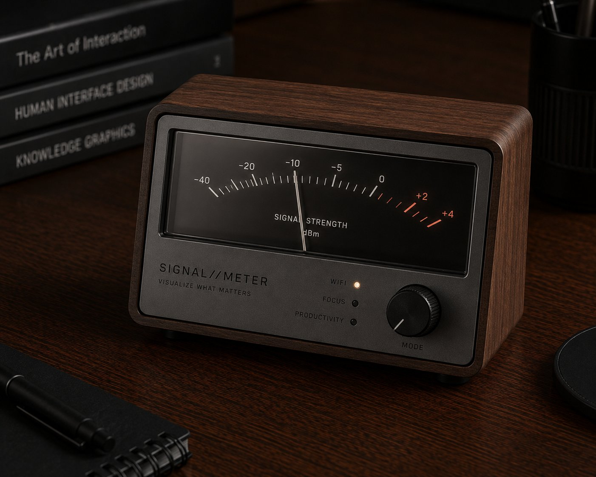
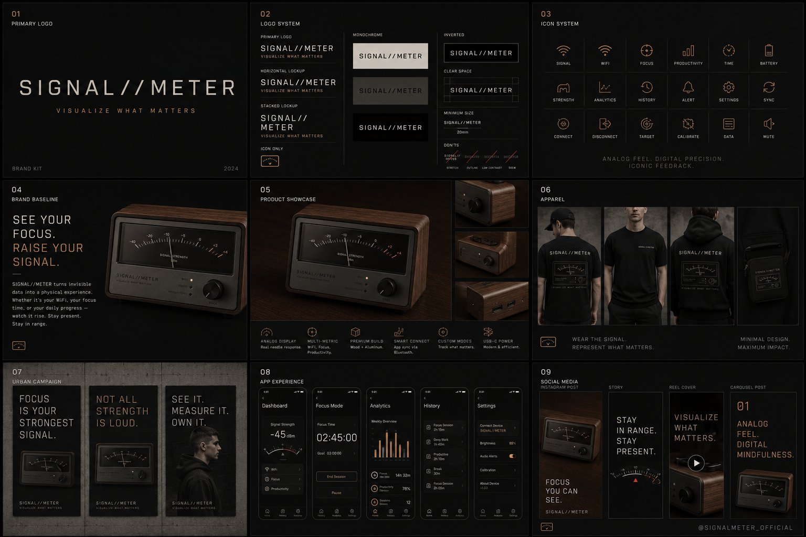

A physical signal-strength meter shaped like a vintage radio gauge. The needle isn't measuring radio bars — it's mapped to your focus time, deep-work blocks, Wi-Fi quality, calendar load, anything analog can read.
Pick a metric in the companion app — focus minutes, calendar load, deep-work session, anything.
The gauge calibrates to your range. Min, max, sweet spot — the needle finds its scale.
Glance up during work. The needle tells you where you are. No notifications, no badges.
The needle moves the way real radio gauges did. Soft sweep, mechanical settle, no jitter.
REST API takes any number — Pomodoro count, calendar density, Wi-Fi quality, server load.
Walnut wood, brass bezel, hand-finished glass. Looks like it was on a shelf in 1962.
Connect to local Wi-Fi for cloud feeds, or pair Bluetooth to your laptop for app-driven data.
Hang two, four, nine. Build a dashboard wall of needles, each tuned to a different metric.
Webhooks let you push from anywhere. Stripe revenue today? Github stars? You pick.

Signal//Meter sells on the visual. A walnut gauge with a needle that tracks something invisible is an instantly shareable object. Single- gauge for early backers, multi-gauge sets for higher tiers.